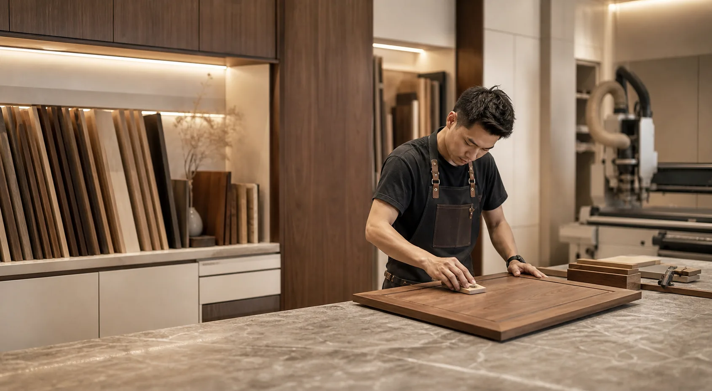

Design
Every space begins with proportion.
WIN DESIGN
Interior design, custom cabinetry and thoughtful space planning for Malaysian homes.
Explore our approach
From concept to completion
Structure, joinery, materials and light. Explore how a room comes together.

Every space begins with proportion.
Made to the millimetre.
Walnut joinery assembles in layers, made for the architecture around it.
Chosen for how it looks, feels and lasts.
Light, shadow and every final junction are tuned as one composition.
From an idea to a space you can live in.
From planning a room to fitting its final details, we bring design, cabinetry and renovation together around your home.
Have a space in mind?